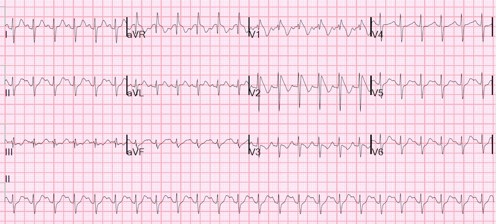
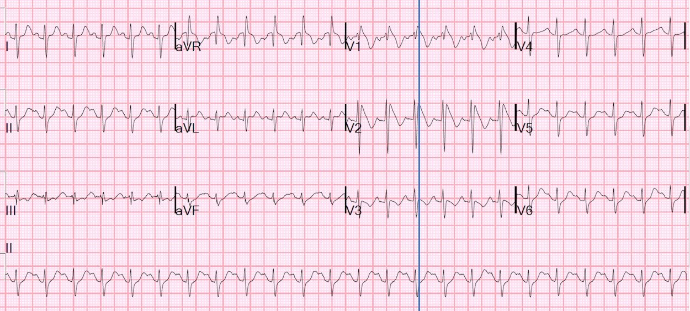
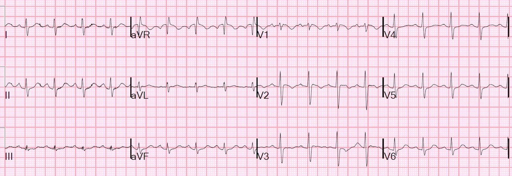
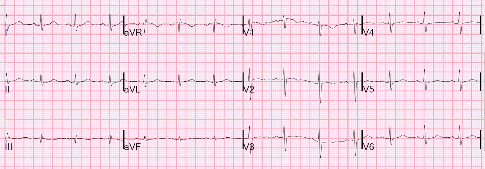
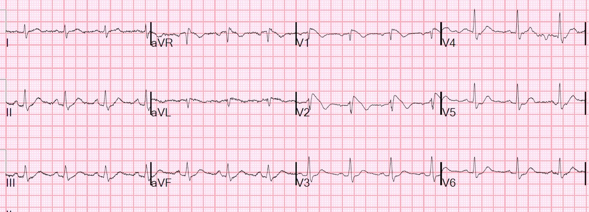
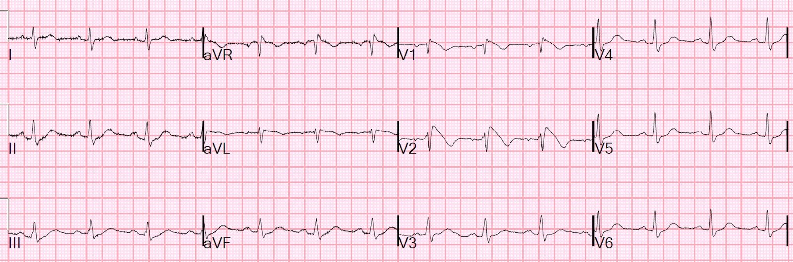

05/12/2019 — Một phụ nữ trẻ tăng thân nhiệt, mê sảng và khô da: Brugada do sốt khởi phát? Ngộ độc diphenhydramine? Thuốc chống trầm cảm ba vòng?
Bản dịch tiếng Việt của bài "A young F is hyperthermic, delirious, and dry: Fever-induced Brugada? Diphenhydramine toxicity? Tricyclic?" – Dr. Smith’s ECG Blog. Giữ nguyên toàn bộ 8 hình ảnh của bản gốc.
Ca 1.
Một bệnh nhân nữ 30 mấy tuổi, không có tiền sử bệnh lý, đến viện vì sốt cao và mê sảng 1 ngày.
Nhiệt độ của cô ấy là 106 độ F.
Trong quá trình thăm khám, cô ấy được ghi điện tâm đồ.
Tôi bước vào phòng và thấy bản ghi này:


Có nhịp nhanh xoang và cả sóng R lớn ở aVR.
V1 và V2 có hình ảnh Brugada típ 1
Để xác định đây có thực sự là Brugada hay không, điều quan trọng là xác định xem QRS có thực sự kéo dài hay không.
Nếu QRS kéo dài, thì chẩn đoán phân biệt bao gồm:
1. Tăng kali máu
2. Ngộ độc thuốc, đặc biệt là diphenhydramine, thuốc có tác dụng chẹn kênh natri, và cả tác dụng kháng cholinergic có thể gây nhịp nhanh xoang, tăng thân nhiệt, mê sảng và khô da.
—-Các thuốc khác có tác dụng chẹn kênh natri: thuốc chống trầm cảm ba vòng (tricyclic antidepressants). Các thuốc này gây sóng R lớn ở aVR, nhưng thường cũng làm QRS rộng hơn.
—-Các thuốc chẹn kênh natri khác, như flecainide.
Tuy nhiên, nếu QRS không kéo dài, thì Brugada bị bộc lộ do sốt nhiều khả năng là thủ phạm.
Ở đây tôi đã vẽ một đường từ điểm kết thúc QRS ở chuyển đạo II kéo ngang qua phía dưới lên tới V1 và V2.


_______
Tài liệu được trích dẫn dưới đây về các tiêu chuẩn điện tâm đồ hiện hành cho hình ảnh Brugada đưa ra một lời giải thích rất hay về điều này.
Bayes de Luna, A và cs. Current electrocardiographic criteria for diagnosis of Brugada pattern: a consensus report. J Electrocardiology 45 (2012):433-442 (Các tiêu chuẩn điện tâm đồ hiện hành để chẩn đoán hình ảnh Brugada: báo cáo đồng thuận).
RBBB đơn thuần
Brugada típ 1 và RBBB tiến triển (advanced RBBB) đều có đặc điểm là một sóng dương tận cùng và sóng T âm ở V1-V2. Việc phân biệt 2 tình trạng này không khó vì, thông thường, trong RBBB tiến triển, đoạn ST không chênh lên ở các chuyển đạo trước tim bên phải, sóng tận cùng (r’ hoặc R’) xảy ra đồng thời với sóng S rộng quan sát thấy ở chuyển đạo I và V6, và QRS rộng hơn (≥120 mili giây).
Tuy nhiên, trong hình ảnh Brugada (BrP) típ 1, thường không có sóng S rộng ở các chuyển đạo bên trái, vì các lực tận cùng của phức bộ thất ở V1-V2 chỉ có thể ghi được bởi các điện cực đặt gần vị trí xảy ra hoạt động điện bất thường (đường ra thất phải) chứ không ghi được từ các chuyển đạo ở xa hơn. Vì vậy, QRS ở các chuyển đạo bên trái thường dưới 120 mili giây.
_________
Hội chứng Brugada típ 1, có thể có sẵn ở điện tâm đồ nền hoặc bị bộc lộ do sốt, có thời gian QRS bình thường nhưng sóng R’ ở V1 và V2 trông rộng do đoạn ST dốc xuống.
Diễn biến lâm sàng:
Bệnh nhân được chẩn đoán viêm thận-bể thận và được hạ sốt bằng thuốc hạ sốt. Cô ấy được truyền dịch, tình trạng cải thiện và trở nên tỉnh táo. Cô ấy có thể cho biết mình không dùng thuốc nào, không dùng chất gây nghiện, không dùng thuốc không kê đơn (OTC), không dùng thực phẩm chức năng.
Chúng tôi ghi lại điện tâm đồ:


Bệnh sử bổ sung sau đó: Bản thân bệnh nhân không có thêm đặc điểm nguy cơ cao nào (ngất / tiền ngất), nhưng mẹ cô ấy đã bị ngừng tim đột ngột trong khi ngủ.
Theo dõi vào buổi sáng hôm sau:


Dưới đây là khuyến cáo của bác sĩ điện sinh lý.
Khuyến cáo này dựa trên công cụ tính nguy cơ của Sieira và cs., 2017, cho điểm nguy cơ ở mức ranh giới (2).
–Xét nghiệm di truyền có thể hữu ích để khẳng định chẩn đoán và cho phép tầm soát những thành viên khác trong gia đình có nguy cơ.
–Khuyến cáo thăm dò điện sinh lý (EP) để phân tầng nguy cơ thêm cho cô ấy, việc cấy ICD tùy thuộc vào kết quả. –Bất kể việc đánh giá thêm ra sao, cô ấy nên tránh nhịp chậm, thuốc ức chế nút AV, thuốc chẹn kênh natri và sốt.
–Nếu bị sốt, cô ấy nên tích cực dùng acetaminophen và/hoặc ibuprofen và, nếu không cải thiện, sẽ cần đến khoa cấp cứu (ED) để đánh giá thêm.
–Nếu có bất kỳ cơn ngất hay tiền ngất nào, cô ấy cần được đánh giá ngay tại khoa cấp cứu.
–Tất cả người thân bậc 1 nên được ghi điện tâm đồ 1 lần.
__________________________________
Ca 2.
Vài ngày sau, bệnh nhân này đến viện vì cúm:
Bệnh nhân 70 mấy tuổi, sốt 38,0 độ, được chẩn đoán cúm (5523467)


Có đúng không?
Không! Đây là hình ảnh Brugada típ 1 kinh điển.
Đọc thêm về các típ của hội chứng Brugada tại đây. Típ 2 và típ 3 đã được gộp thành Típ 2 và trông khác hẳn.
Is this Type 2 Brugada syndrome/ECG pattern? (Đây có phải là hội chứng Brugada / hình ảnh điện tâm đồ Brugada típ hai không?)
Bản ghi này được ghi khoảng 30 phút sau đó:


Đã tìm được một điện tâm đồ cũ và bản ghi đó bình thường.
Bệnh nhân phủ nhận hoàn toàn đau ngực, và troponin lúc ban đầu và sau 2 giờ đều không phát hiện được. Siêu âm tim tại giường cho thấy chức năng tâm thu nhìn chung bình thường đến tăng động, không có vùng rối loạn vận động thành rõ ràng. Xét nghiệm đáng chú ý có test nhanh cúm A dương tính và hạ natri máu.
Bệnh nhân được tư vấn về tầm quan trọng của việc kiểm soát sốt, theo dõi với bác sĩ chăm sóc ban đầu và cả bác sĩ tim mạch.
Họ đã không kiểm tra xem hình ảnh Brugada có hết khi kiểm soát được sốt hay không. Việc này là nên làm.
_____________________________________________
_____________________________________________
Dưới đây là thêm các ca Sốt và Brugada:
—Hyperthermia and ST Elevation (Tăng thân nhiệt và ST chênh lên)
— Hội chứng Brugada và Sốt đã được bàn luận chi tiết
—A Patient with Syncope (Một bệnh nhân bị ngất)
— một ca ngất rất kín đáo do Brugada đã bị bỏ sót ở lần đến viện đầu tiên và chỉ được chẩn đoán khi bệnh nhân ngất tái phát 3 năm sau đó.
–Syncope and ST Segment Elevation. And another finding. How well does the computer interpretation perform? (Ngất và ST chênh lên. Và một dấu hiệu khác. Kết quả đọc bằng máy tính hoạt động tốt đến đâu?)
— trong ca này, máy tính chẩn đoán STEMI nhưng bệnh nhân bị Sốt kèm Brugada
______________________________________________
______________________________________________
Sốt và Brugada–Các bài báo quan trọng
Y văn dưới đây cho thấy Brugada do sốt khởi phát (fever-induced Brugada) thực sự có nguy cơ cao xảy ra biến cố rối loạn nhịp.
Bài báo này nói về Brugada nói chung, không chỉ Brugada do sốt khởi phát:
A score model to predict risk of events in patients with Brugada Syndrome (Một mô hình thang điểm dự đoán nguy cơ biến cố ở bệnh nhân hội chứng Brugada)
Toàn văn tại đây: https://academic.oup.com/eurheartj/article/38/22/1756/3098019
Đây là một đoàn hệ đơn trung tâm gồm 400 bệnh nhân hội chứng Brugada. 78 bệnh nhân có điện tâm đồ típ I tự phát. Biểu hiện lâm sàng là đột tử được cứu sống ở 20 bệnh nhân, ngất ở 111 và không triệu chứng ở 269 bệnh nhân. Tiền sử gia đình có ngất hoặc đột tử được ghi nhận ở 184 bệnh nhân, trong đó 31 trường hợp là người thân bậc một dưới 35 tuổi. ICD được cấy cho 176 bệnh nhân. Trong thời gian theo dõi trung bình 80,7 tháng, có 34 biến cố rối loạn nhịp xảy ra
(tỷ lệ biến cố: 1,4%/năm). Các biến số liên quan có ý nghĩa với biến cố
là: biểu hiện bằng đột tử do tim (SCD) được cứu sống (tỷ số nguy cơ [HR] 20,0), ngất (HR
3,7), típ I tự phát (HR 2,7), giới nam (HR 2,7), đột tử do tim sớm ở
người thân bậc một (HR 2,9), rối loạn chức năng nút xoang (SND) (HR 5,0), rối loạn nhịp thất gây ra được (VA) (HR 4,7) và
tình trạng là người mang bệnh đầu tiên (proband) (HR 2,1). Một thang điểm bao gồm hình ảnh điện tâm đồ, tiền sử gia đình
có SCD sớm, thăm dò điện sinh lý gây ra được rối loạn nhịp, biểu hiện bằng
ngất hoặc đột tử được cứu sống và SND có hiệu năng dự đoán là 0,82. Một
điểm số lớn hơn 2 tương ứng với xác suất biến cố trong 5 năm là 9,2%.
_____________
Các bài sau đây nói riêng về Brugada do sốt khởi phát
Arrhythmic events in Brugada syndrome patients induced by fever. Annals of Noninvasive Electrocardiology 2019. (Các biến cố rối loạn nhịp do sốt gây ra ở bệnh nhân hội chứng Brugada)
Các tác giả này đã phân tích tất cả các báo cáo hiện có về sốt kèm Brugada và nhận thấy tỷ lệ biến cố rối loạn nhịp ở bệnh nhân đang sốt kèm Brugada là 38% (rất cao!). (Kết quả này có nguy cơ sai lệch chọn lựa cao, vì tất cả đều là các ca được báo cáo.)
Nghiên cứu này dẫn chiếu bằng chứng thực nghiệm cho thấy nhiệt độ cao hơn làm thay đổi dẫn truyền natri qua màng tế bào ở bệnh nhân mang đột biến SCN5A.
Các nghiên cứu đã cho thấy tỷ lệ hiện mắc hội chứng Brugada (BrS) ở bệnh nhân sốt cao hơn so với bệnh nhân không sốt. Sốt không chỉ làm bộc lộ điện tâm đồ dạng Brugada mà còn làm tăng nguy cơ rối loạn nhịp nhanh thất như rung thất (VF) hoặc đột tử do tim. Cơ chế nền của hiện tượng này có thể liên quan đến sự giảm dòng natri khi nhiệt độ tăng, điều gần đây đã được mô tả trên tế bào cơ tim người biệt hóa từ tế bào gốc vạn năng cảm ứng.
Các tác giả nhấn mạnh rằng cần tiến hành
phân tích thêm để tìm ra một cách thống nhất về việc điều trị
bệnh nhân có BrS do sốt khởi phát cũng như để xác định
nguy cơ biến cố rối loạn nhịp có thể đe dọa những bệnh nhân này trong
đợt sốt tiếp theo.
Kết luận của bài báo này: Sốt là một yếu tố nguy cơ lớn đối với các biến cố rối loạn nhịp ở bệnh nhân hội chứng Brugada. Bệnh nhân đã biết có hội chứng Brugada do sốt khởi phát cần được theo dõi chặt chẽ khi sốt và được bắt đầu điều trị hạ sốt càng sớm càng tốt. Dữ liệu về tác động của thăm dò điện sinh lý ở bệnh nhân BrS khởi phát do sốt còn hạn chế. Thăm dò điện sinh lý có thể hữu ích ở bệnh nhân có triệu chứng (Sroubek và cs., 2016) khi có điện tâm đồ BrS tự phát
hoặc điện tâm đồ BrS do thuốc gây ra.
The prognostic significance of fever-induced Brugada syndrome. Heart Rhythm 2016. (Ý nghĩa tiên lượng của hội chứng Brugada do sốt khởi phát)
Tám mươi tám bệnh nhân không triệu chứng có hội chứng Brugada Típ 1 do sốt khởi phát có tuổi trung bình 45,8 ± 18,7 tuổi và 71,6% (67 trên
88) là nam giới. Hai mươi mốt phần trăm (18 trên 88) có tiền sử gia đình đột tử do tim
và 26,4% (14 trên 53) mang đột biến SCN5A gây bệnh. Thử thách bằng thuốc dương tính
ở 29 trên 36 bệnh nhân được làm (80,6%). Nguy cơ rung thất ở bệnh nhân không triệu chứng
là 0,9%/năm (3 trên 88, 43,6 ± 37,4 tháng).
Fever-related arrhythmic events in the multicenter Survey on Arrhythmic Events in Brugada Syndrome. Heart Rhythm 2018. (Các biến cố rối loạn nhịp liên quan đến sốt trong Khảo sát đa trung tâm về các biến cố rối loạn nhịp ở hội chứng Brugada.) Trong số 588 bệnh nhân đã biết có hội chứng Brugada và có biến cố rối loạn nhịp đầu tiên, 35 bệnh nhân xảy ra biến cố trong lúc sốt. Tiền sử gia đình có đột tử, tiền sử ngất và điện tâm đồ Brugada típ 1 tự phát lần lượt được ghi nhận ở 17%, 40% và 71% bệnh nhân. Rung thất (VF) được gây ra khi thăm dò điện sinh lý (EP) ở 9 trên 19 bệnh nhân (47%). Đột biến SCN5A được tìm thấy ở 14 trên 28 bệnh nhân (50%). Tỷ lệ biến cố rối loạn nhịp (AE) liên quan đến sốt cao nhất được ghi nhận ở nhóm trẻ em (dưới 16 tuổi), với tỷ lệ biến cố cao một cách không tương xứng ở trẻ rất nhỏ (0–5 tuổi) (65%).

===================================
BÌNH LUẬN CỦA TÔI, bởi KEN GRAUER, MD (5/12/2019):
===================================
Chúng tôi đã nhiều lần bàn về các hình ảnh Brugada trên điện tâm đồ và hội chứng Brugada trên Dr. Smith’s ECG Blog (ngày 8 tháng Chín năm 2019) — (ngày 30 tháng Một năm 2019) — và nhiều bài khác …
- Trong bài hôm nay — Dr. Smith nhấn mạnh khả năng sốt cao làm khởi phát hình ảnh Brugada típ 1 trên điện tâm đồ, kèm theo nguy cơ tăng xảy ra biến cố rối loạn nhịp.
Phần điểm lại y văn liên quan đã được Dr. Smith trình bày (ở trên). Tôi chỉ giới hạn bình luận của mình ở những suy nghĩ tổng hợp sau đây:
- Hình ảnh điện tâm đồ của hình ảnh Brugada típ 1 (như trên điện tâm đồ đầu tiên của ca này) cần được nhận ra ngay lập tức. Các bác sĩ cấp cứu cần thành thạo việc nhận diện hình ảnh điện tâm đồ này.
- Bệnh lý sốt cấp tính có thể “làm lộ” hội chứng Brugada trước đó chưa được chẩn đoán. Điều trị nguyên nhân gây sốt (là viêm thận-bể thận cấp ở Ca #1 nêu trên) — có thể làm hết (hoặc giảm đi rất nhiều) hình ảnh điện tâm đồ bất thường (như đã xảy ra ở Ca #1).
- Điều đã rõ — là những bệnh nhân có hình ảnh Brugada típ 1 trên điện tâm đồ tự phát hoặc được gây ra (kể cả do sốt gây ra) có nguy cơ tăng rất cao xảy ra biến cố rối loạn nhịp ác tính trong tương lai NẾU có: i) Tiền sử gia đình có đột tử — và/hoặc — ii) Hình ảnh Brugada típ 1 tự phát trên điện tâm đồ ở một người thân trực hệ bậc 1 — và/hoặc — iii) Bản thân bệnh nhân có tiền sử ngất, tiền ngất, co giật hoặc thở ngáp (agonal) về đêm — và/hoặc — iv) Nghiệm pháp thử thách bằng thuốc chẹn kênh natri dương tính sau khi vấn đề cấp tính khởi phát đã được giải quyết.
- Điều chưa rõ bằng — là một bệnh nhân không triệu chứng, ngoài ra khỏe mạnh và có tim bình thường về cấu trúc phải đối mặt với nguy cơ lớn đến mức nào, đặc biệt NẾU hình ảnh Brugada típ 1 trên điện tâm đồ biến mất sau khi biến cố khởi phát đã được giải quyết. CÂU HỎI MẤU CHỐT: Người phụ nữ trẻ 30 mấy tuổi trước đó khỏe mạnh ở Ca #1, có hình ảnh Brugada típ 1 trên điện tâm đồ phần lớn đã hết khi điều trị bệnh lý sốt cấp tính — Cô ấy có thực sự cần ICD không? (máy khử rung tim cấy được), với nguy cơ lâu dài gặp các biến chứng liên quan đến thiết bị ICD, bao gồm các cú sốc không phù hợp?
ĐIỀU CỐT LÕI: Trong khi việc ra quyết định là rõ ràng đối với những bệnh nhân có triệu chứng có hình ảnh Brugada típ 1 trên điện tâm đồ — thì với những người không triệu chứng và không có bất thường điện tâm đồ dai dẳng, việc này lại phức tạp và vẫn còn phần nào là một “mục tiêu di động”. Tôi sẵn lòng chuyển những bệnh nhân này đến chuyên khoa điện sinh lý tim (EP) để được đánh giá chính thức.
T.B. (P.S.) (tôi viết phần này vào ngày hôm sau, ngày 6/12/2019): Tôi đã bỏ sót phần “Bệnh sử bổ sung thu thập được về sau” khi viết bình luận ban đầu vào ngày 5/12. Phần bệnh sử bổ sung này cho biết thêm rằng mặc dù bản thân bệnh nhân không bị ngất/tiền ngất — mẹ của cô ấy đã bị ngừng tim đột ngột trong lúc ngủ ==> Do đó, đây là Tiền sử gia đình dương tính, điều mà với người phụ nữ trẻ này rõ ràng xứng đáng được chuyên khoa điện sinh lý tim (EP) đánh giá đầy đủ!